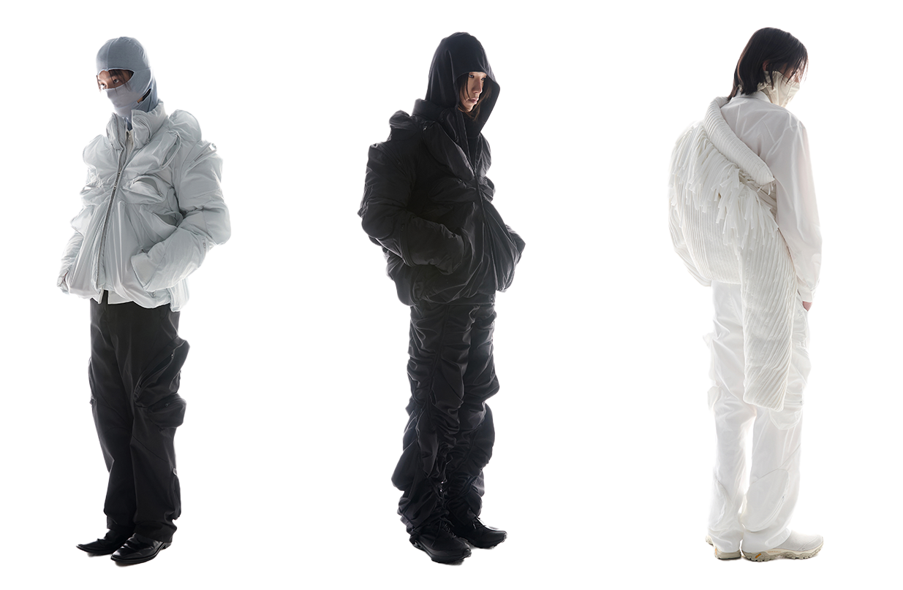

Post Archive Faction
POST ARCHIVE FACTION thrives in the fringes of fashion, uniting avant-garde streetwear with futuristic outerwear. Founded in 2018 by Dongjoon Lim and Sookyo Jeong, the South Korean brand follows an experimental process to craft its pieces; deconstructing and reconstructing elements to reach a garments final form.
The Brand
im was born in Seoul, Korea in 1992 and studied Industrial Design and Spatial Design at Hongik University. After graduating in 2016, Lim worked as a UX designer for fashion brands and IT corporations. He soon developed an interest in launchings his own business, although he did not initially land on fashion. In an interview with Hypebeast, Lim likened the experience of entering the fashion industry to “those times when you play a game without giving it much thought, but it turns out to be very enjoyable”.
Since the start, PAF has eschewed the conventional system of seasonal collections, instead opting for a numerical system beginning with “1.0”. This allows the studio to take a more introverted approach to design, and allows more leeway in the production process given the supply chain issues that have plagued the fashion industry due to COVID-19. Moreover, design influences can easily be traced back to earlier collections through titles. For example, the “3.1” collection was directly based on the brand’s “3.0” collection, but developed many of the ideas seen in the preceding work.
Label
PAF’s unique approach to design extends well beyond their nomenclature and into the finer details of design. Each garment is labeled left, right, and center, and often a single idea will be expressed in all three modes. The labeling system is akin to a political spectrum, where left represents the most radical and experimental ideas, right is a more conservative and traditional route, and center sits as an intermediary between the two. This system takes on a new life when ideas on the left move towards the right in succeeding collections, as both PAF and its audience become more familiar with a certain garment or concept.
Future of PAF
In January of 2020, PAF was invited to present their clothing in a showroom at Paris Fashion Week, where the team assembled an array of 3D printed and foam-meshed art pieces into a beautiful display that highlighted the “3.1” collection. The work on the presentation indicated that the PAF team has interdisciplinary skills outside of fashion, something which Lim has expressed interest in. He has mentioned that in the future he would like to see PAF developing its identity in the realm of tools and furniture in addition to the exploratory clothing they already produce. In any case, we will be watching al future developments with a keen eye, and so should you.